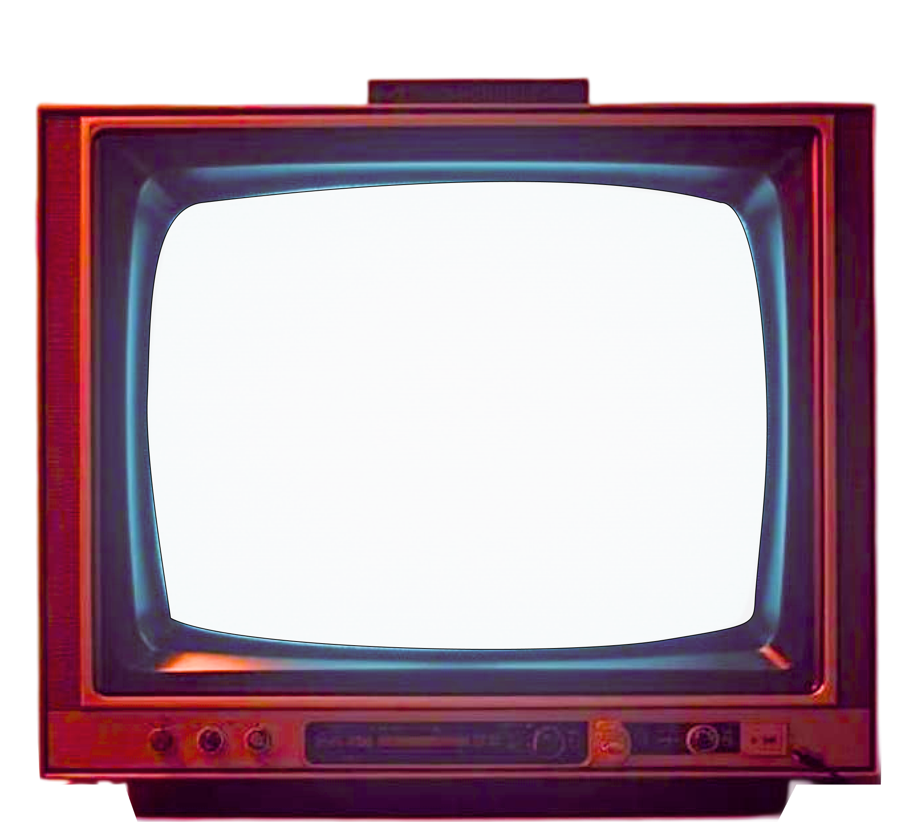

“Children are great imitators,
so give them something great
to imitate”
Out of all the content that
children absorb, TV cartoons
have been a constant
Out of all the content that
children absorb, TV cartoons
have been a constant
At least, for generations that came
before the OTT boom
before the OTT boom

Out of all the content that children
absorb, TV cartoons have been a constant
At least, for generations that came
before the OTT boom
before the OTT boom